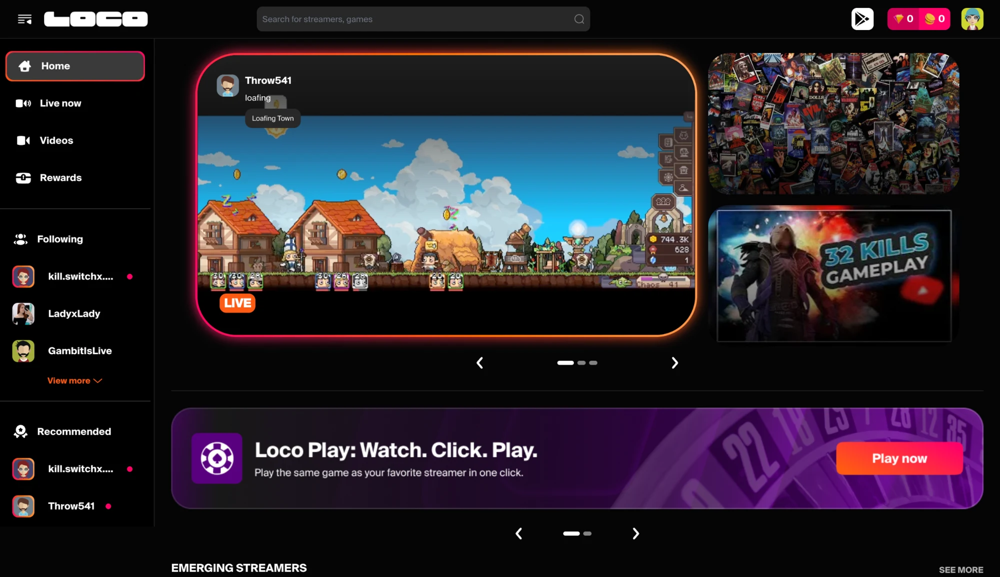
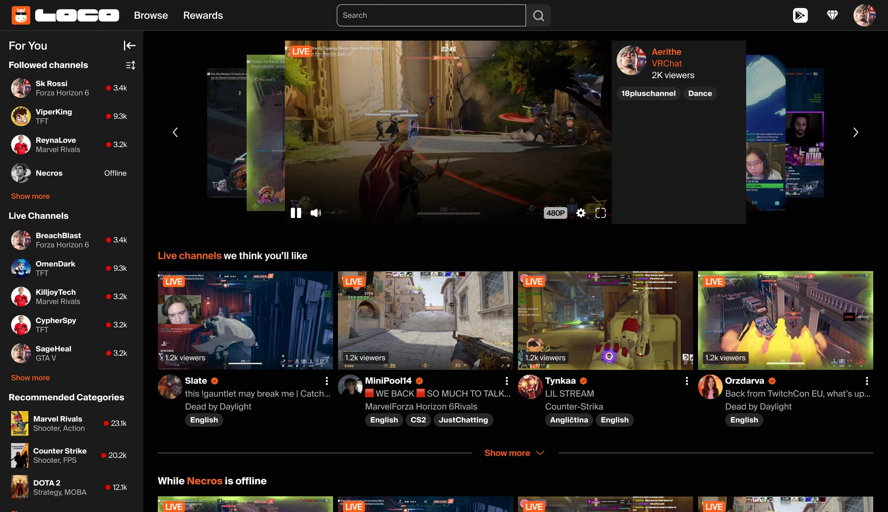
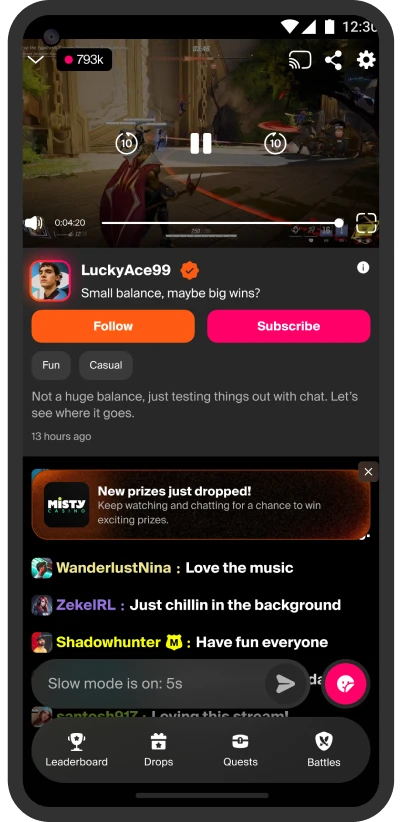
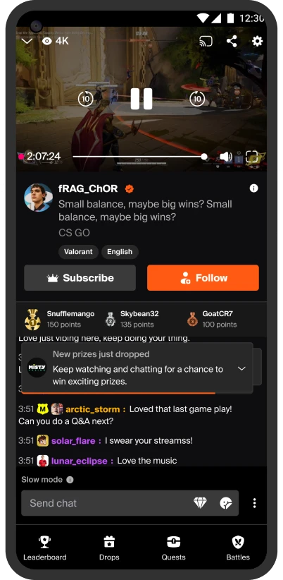
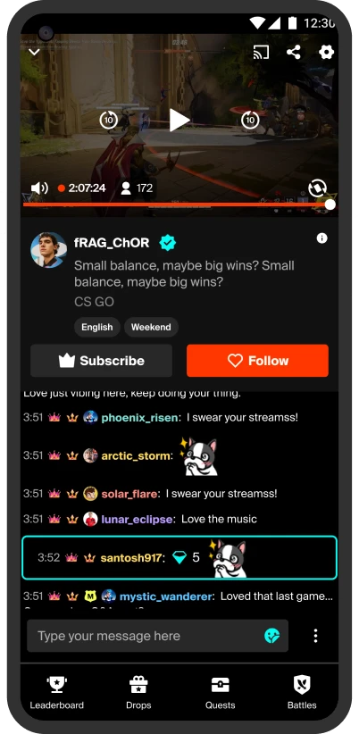

Context
Loco was redesigning its viewer experience across the app, web, and mobile web. The goal was to refresh the visual language within one month while keeping the existing user experience intact.
The timeline was ambitious, so the team made a conscious decision to focus on visual consistency rather than rethink interactions. Existing flows already worked well enough and engineering capacity was limited, making a complete UX redesign unrealistic for the release.
At the same time, the product branding was still evolving. Final colours, gradients, and iconography were being created by an external agency and would arrive several weeks after the project had already begun.
Six designers worked on different parts of the product in parallel. While this allowed us to move quickly, it also introduced a new challenge. Keeping the experience consistent across every screen would depend on how well we collaborated, not simply on having a design system.
Constraint
This project came with several constraints that shaped every design decision.
- The redesign had to cover three platforms within one month.
- Existing user flows needed to remain unchanged so engineering could deliver within the release timeline.
- The final visual identity was unavailable during the first half of the project, which meant the system had to be flexible enough to absorb branding changes later.
- Multiple designers were working simultaneously, so consistency could not rely on manual reviews alone. We needed a shared way of building interfaces that everyone could follow.
My role
I was responsible for designing several high visibility experiences, including the Homepage, Livestream, Fullscreen Livestream, and Leaderboard.
Rather than recreating reference screens one by one, I focused on building reusable components that could be shared across the team. My goal was to make each screen easy to maintain while keeping the experience consistent across different platforms.
One of the most valuable decisions we made was introducing semantic design tokens instead of applying colours directly inside components. The original motivation came from engineering, who wanted a simpler way to support light and dark themes. As I built my flows, every component referenced these tokens instead of fixed colours. At the time it felt like a technical improvement, but it later became one of the biggest advantages of the project.
Since several designers were working in parallel, regular conversations became just as important as the components themselves. We frequently aligned on visual decisions to reduce differences before they spread across the product.
Desktop

Old UI

New UI, after final style guide
App
Documentation of change log for each key screen was maintained for future reference.

Old UI

New UI, before final style guide

New UI, after final style guide
Design decisions
Every project is shaped by constraints, and this one was no different.
We deliberately prioritised consistency and scalability over introducing new user experiences. Refreshing the visual language across three platforms within one month delivered far more value than redesigning individual interactions.
Working in parallel also meant that some inconsistencies were inevitable. Our priority was to establish a strong shared foundation first, knowing that smaller refinements could be addressed once the release was complete.
Working with engineering
One aspect of this project that I genuinely enjoyed was working closely with engineers throughout the release.
Because of the compressed timeline, it was not practical to design every possible screen before development began. Instead, we focused on building a robust design system with clear styling guidelines that could act as the single source of truth. This gave engineers enough flexibility to build most screens without waiting for detailed mock ups.
As development progressed, there were naturally moments where existing components did not fully answer a specific scenario. Rather than creating every edge case in advance, my teammate and I stayed closely involved during implementation. We monitored Slack conversations throughout the day and remained available in the war room to resolve questions as they came up.
Some requests needed a new screen, while others only required clarification on how an existing component should behave. Responding quickly meant engineers could continue building without unnecessary delays, which was especially important as release deadlines approached.
I also gained a deeper appreciation for the pressure engineers experience during delivery. Their questions were rarely about the design itself. They were usually about reducing uncertainty so they could move forward with confidence. Having a well structured design system made those conversations much easier because both teams could rely on the same source of truth.
Outcome
When the final brand assets arrived about three weeks into the project, the benefits of the design system became immediately visible.
Because every component was built using semantic tokens, updating colours, gradients and iconography happened across the entire product in a single evening instead of requiring manual changes screen by screen.
Although the token structure was originally introduced to simplify theme support, it also made the branding transition almost effortless.
The design system continues to support new feature development today, making it one of the most valuable outcomes of the project. Beyond the launch itself, it established a shared foundation that designers could continue building on as the product evolved.
After the release, we completed a review to identify places where components had been used inconsistently. Those learnings helped strengthen the guidelines and improved adoption for future work.
What I learned
I realised that creating reusable components is only part of the job. The bigger challenge is helping people use them consistently.
Even with a well structured system, designers naturally make different decisions when working under pressure. A design system succeeds only when the team adopts it with the same level of consistency that it was designed with.
Looking back, I would introduce lightweight checkpoints throughout the project instead of reviewing everything after the work was complete. Something as simple as a shared component review before designs were considered ready would have reduced inconsistencies without slowing the team down.
The project reinforced an idea that continues to shape how I work today. Design systems are not just collections of components. They are shared decision making tools that help teams move faster while creating a more consistent product.